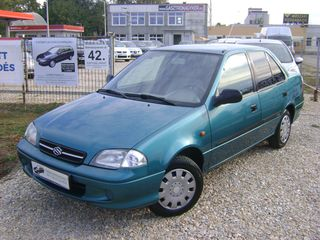
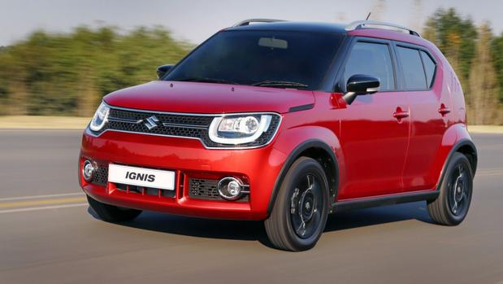

,Suzuki swiftA Suzuki Swift egy Magyarországon is gyártott személygépkocsi. Japánban 1983-tól 1998-ig Suzuki Cultus néven forgalmazták. Észak-Amerikában Suzuki Forsa volt a neve (ill. Geo Metro) . Magyarország első népautója, a Trabant-korszak után, "a mi autónknak" is nevezték. Jelenleg Japánban, Mexikóban és Magyarországon a hatodik, az Egyesült Államokban pedig a nyolcadik generáció fut. |
,Suzuki ignisA Suzuki Ignis egy kiskategóriás egyterű autó, amelyet a Suzuki a General Motorsszal közösen fejlesztett ki.Először 1999-ben mutatta be a GM a YGM-1-et, amelyet a Suzuki kezdetben kissé átformálva kezdett gyártani, később visszatért az eredeti formákhoz. Az aktuális generáció forgalmazását Magyarországon 2017-ben kezdték meg, miután 2007-ben az előzőt leállították. |